長期トレンド
JKMとJEPXシステムプライスの推移グラフ
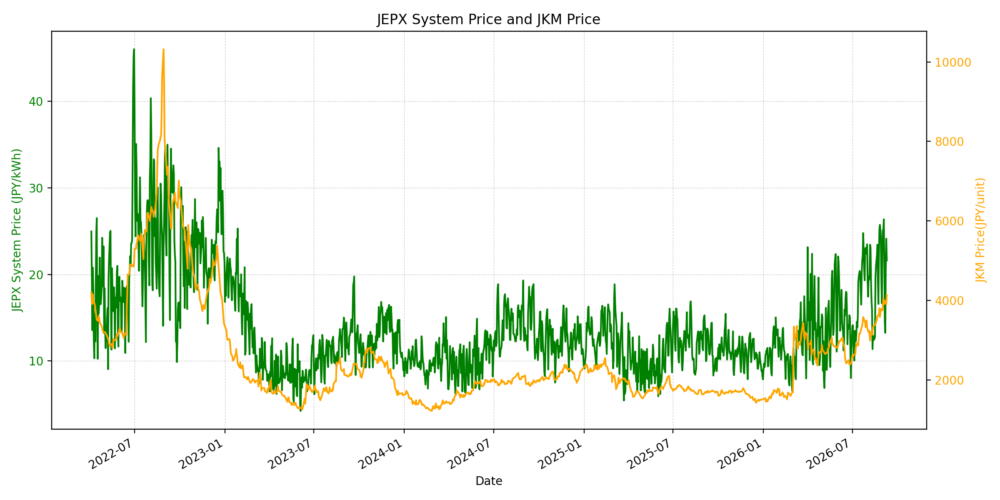
WTIの推移グラフ
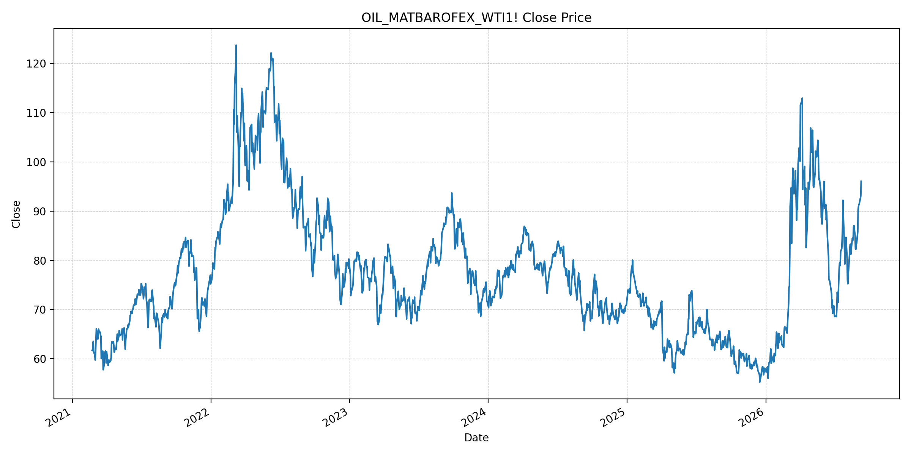
JEPXエリアプライスグラフ（直近一年分）
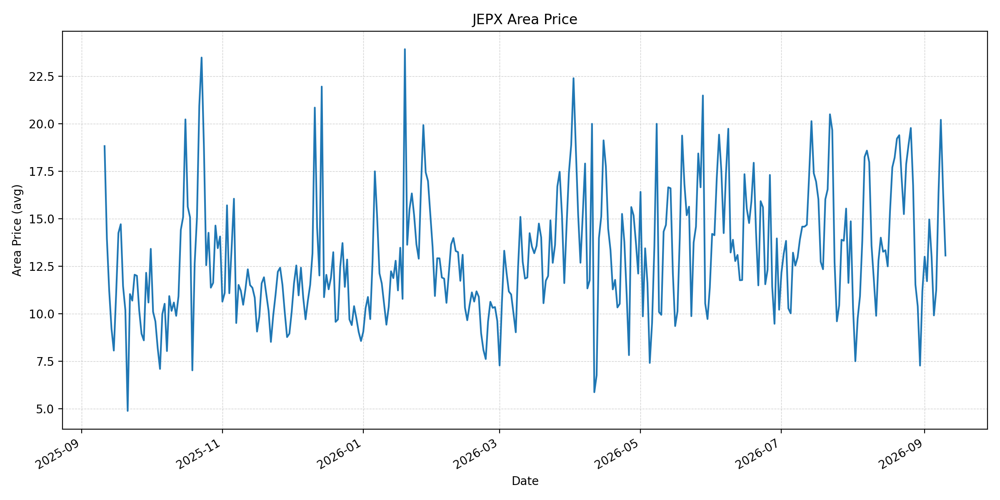
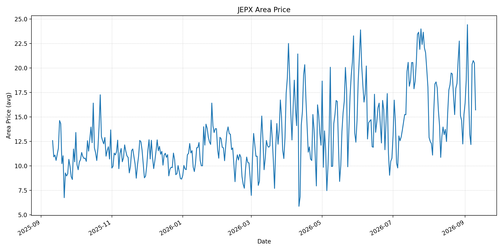
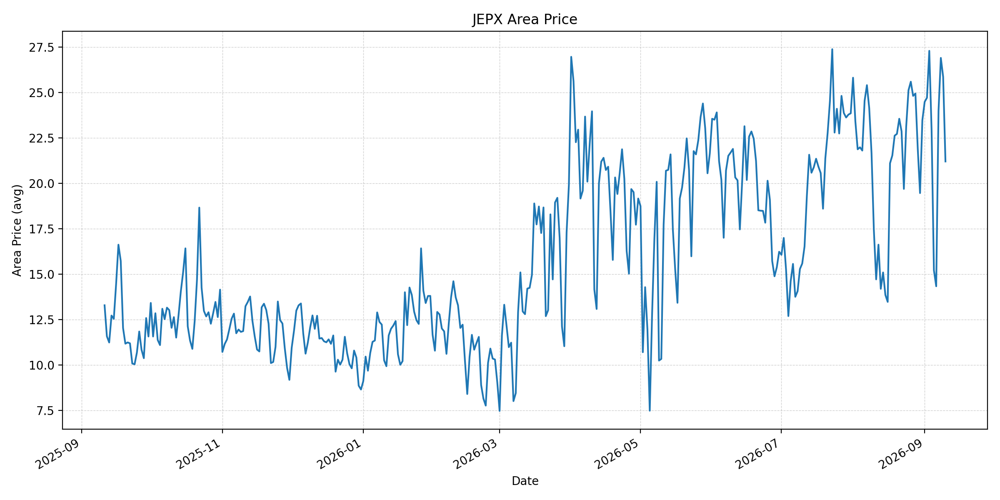
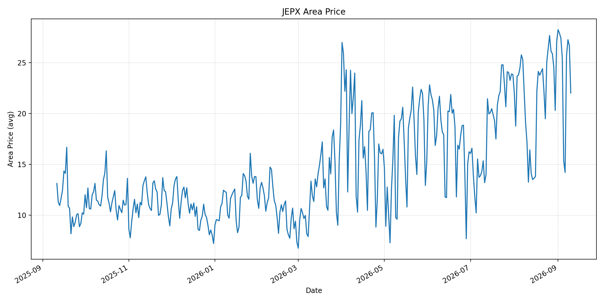
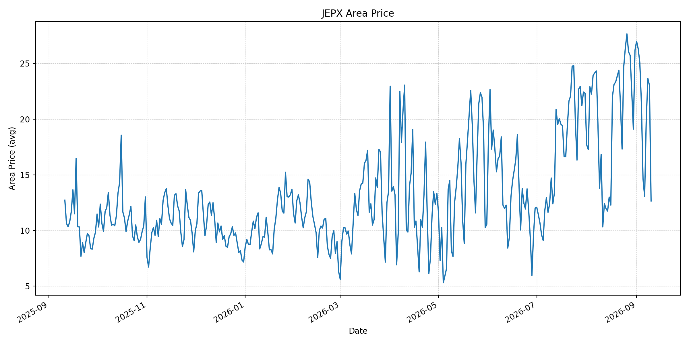
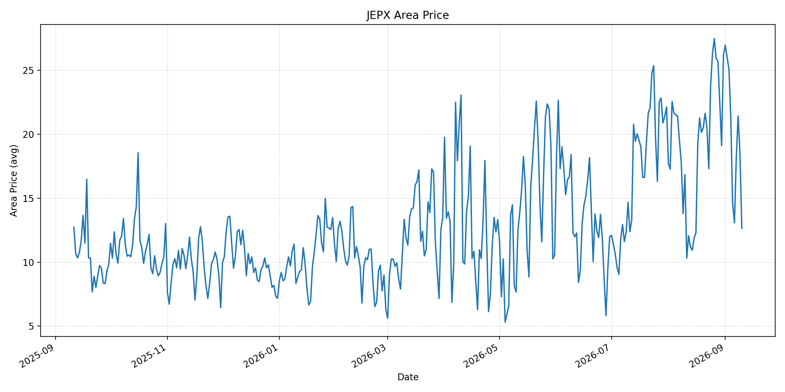
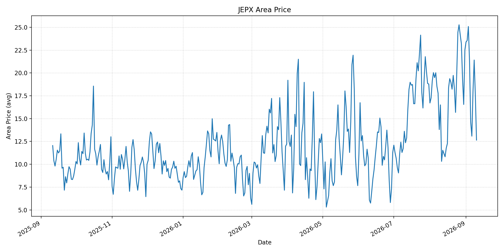
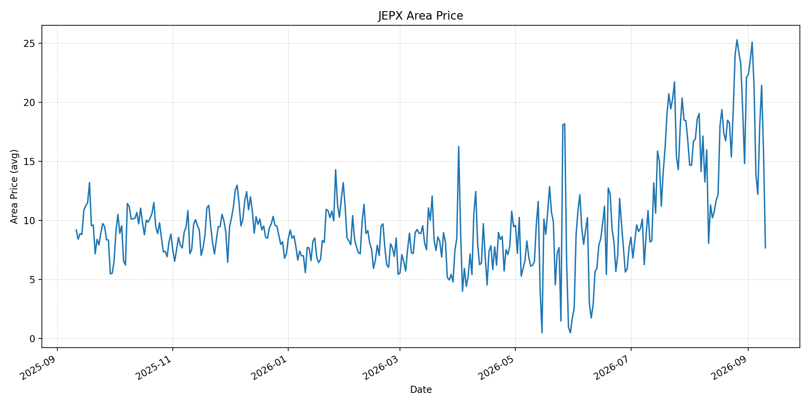
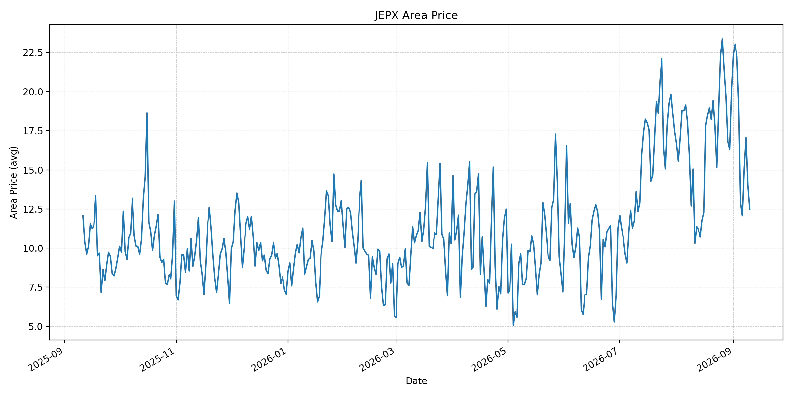
短期トレンド
JKMとJEPXシステムプライスの推移グラフ
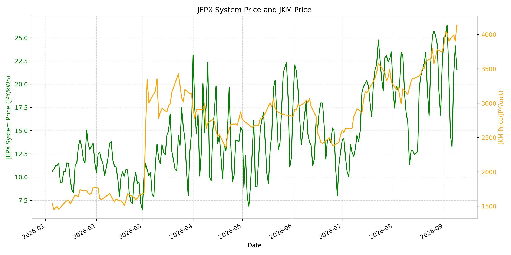
WTIの推移グラフ
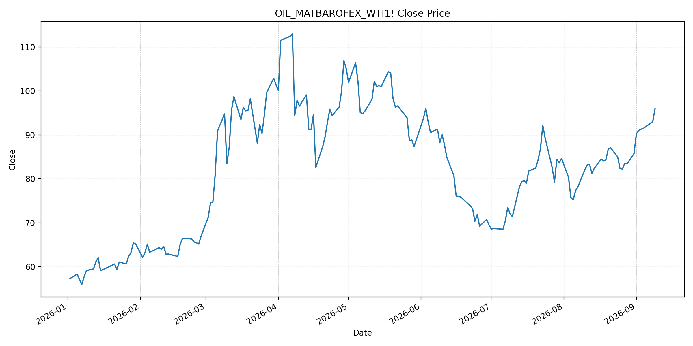
JEPXシステムプライス
最新値は 2026-09-10 分、先週終値は 2026-09-03、先月終値は 2026-08-31 時点の直近値です。
| エリア | 当日価格 | 前日価格 | 前日比（％） | 先週終値 | 先週比（％） | 先月終値 | 先月比（％） | 過去最高値 | 最高値比（％） |
|---|---|---|---|---|---|---|---|---|---|
| システム | 16.33 | 21.61 | -24.43 | 26.37 | -38.07 | 22.10 | -26.11 | 64.06 | -74.51 |
| 北海道 | 13.06 | 16.36 | -20.17 | 14.96 | -12.70 | 11.18 | 16.82 | 73.92 | -82.33 |
| 東北 | 15.72 | 20.51 | -23.35 | 24.43 | -35.65 | 15.25 | 3.08 | 84.92 | -81.49 |
| 東京 | 21.20 | 25.86 | -18.02 | 27.29 | -22.32 | 23.47 | -9.67 | 86.13 | -75.39 |
| 中部 | 22.01 | 26.68 | -17.50 | 27.41 | -19.70 | 27.01 | -18.51 | 52.06 | -57.72 |
| 北陸 | 12.65 | 23.03 | -45.07 | 25.08 | -49.56 | 26.18 | -51.68 | 46.48 | -72.79 |
| 関西 | 12.65 | 18.54 | -31.77 | 25.08 | -49.56 | 26.17 | -51.66 | 46.48 | -72.79 |
| 中国 | 12.65 | 17.52 | -27.80 | 25.08 | -49.56 | 22.51 | -43.80 | 46.48 | -72.79 |
| 四国 | 7.67 | 15.81 | -51.49 | 25.08 | -69.42 | 22.12 | -65.33 | 46.48 | -83.50 |
| 九州 | 12.49 | 14.00 | -10.79 | 22.23 | -43.81 | 20.06 | -37.74 | 40.54 | -69.19 |
LNG先物価格
最新値は 2026-09-09 の LNG(close) です。先週終値は 2026-09-02、先月終値は 2026-08-31 時点の直近値です。
| 当日価格 | 前日価格 | 前日比（％） | 先週終値 | 先週比（％） | 先月終値 | 先月比（％） | 過去最高値 | 最高値比（％） |
|---|---|---|---|---|---|---|---|---|
| 4137.00 | 3905.00 | 5.94 | 4047.00 | 2.22 | 3744.00 | 10.50 | 10319.00 | -59.91 |
石油先物価格
最新値は 2026-09-09 の OIL(close) です。先週終値は 2026-09-02、先月終値は 2026-08-31 時点の直近値です。
| 当日価格 | 前日価格 | 前日比（％） | 先週終値 | 先週比（％） | 先月終値 | 先月比（％） | 過去最高値 | 最高値比（％） |
|---|---|---|---|---|---|---|---|---|
| 96.05 | 93.03 | 3.25 | 91.01 | 5.54 | 85.76 | 12.00 | 123.70 | -22.35 |
ニュース
イラン情勢に関するニュース
- 米・イランの双方によるタンカー攻撃が戦争開始以来最大規模となり、少なくとも船員1人の死亡と1人の行方不明が報じられました。参照: Reuters, 2026-09-09
- イランは米軍のタンカー5隻破壊への報復として、8隻のタンカーと2隻の米艦艇を攻撃したと主張しています。参照: AP, 2026-09-09
ホルムズ海峡経由の石油・LNGに関するニュース
- ブレント原油は9月9日に100ドルを突破し、海峡を通る石油輸送の大幅な停滞が市況を押し上げました。参照: AP, 2026-09-09
- 海峡を巡る攻撃の応酬は、原油とLNGの主要輸送路の安全確保を一段と不透明にしています。参照: Reuters, 2026-09-10
ホルムズ海峡経由でない石油・LNGに関するニュース
- 紅海側ではフーシ派とサウジ支援勢力の衝突が激化し、代替航路としての石油輸送にもリスクが及んでいます。参照: AP, 2026-09-09
- 過去24時間で、海峡を回避するLNG供給量を直接増やす主要な新規公表は確認できませんでした。
日本国内のイラン戦争に関係するニュース
- 過去24時間で、JEPX制度または国内電力需給ルールを直接変更する主要な新規公表は確認できませんでした。
- 日本は中東迂回パイプライン支援と調達先多様化を含む供給強靭化策を進める方針です。参照: Reuters, 2026-08-26
インサイト
ニュース事項による日本の電力市場への影響（短期：数日〜1週間）
- JEPXシステムは 16.33 円/kWhで前日比 -24.43%、先週比 -38.07% です。全エリアで低下し、四国は 7.67 円/kWhとなりました。
- LNGは 4137.00 で前日比 5.94%、WTIは 96.05 ドルで 3.25% 上昇しました。タンカー攻撃と原油100ドル超は、次の燃料調達と卸電力取引への上振れリスクです。
- 短期では、海峡・紅海側の通航量、船舶安全事案、エネルギー施設の被害状況を日次で確認します。
ニュース事項による日本の電力市場への影響（長期：1ヶ月〜半年）
- システム価格は先月比 -26.11% ですが、LNGは 10.50%、WTIは 12.00% 上昇しています。燃料高が継続すれば火力の限界費用へ波及する可能性があります。
- 北海道は先月比 16.82%、東北 3.08% と上昇する一方、四国は -65.33% です。燃料とエリア別需給を分けて監視します。
- 海峡と紅海側の同時リスクは代替輸送の余力を低下させます。調達多様化、備蓄、迂回インフラの実効性を中長期で検証します。